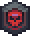
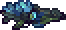
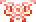
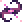

Giant Clam
A mini boss that rarely spawns in the Sunken Sea after defeating the Desert Scourge, and is generally the first mini boss that the player will encounter. It receives a huge buff during Hardmode.
Active in Biome
Located deep under Desert biome
Tooltip
Quite tough when its shell is closed, with high defense and summon minions on support, highly recommended with dash mobility accessories in order to dodge his deadly crush from above. After defeated, he'll spawn Sea King an NPC gives you a lot of water-themed stuff for early game
Not much about this boss
Boss theme plays when on screen
| Type | Miniboss |
| Space | Sunken Sea |
| Damage | 170 190 |
| HP | 3700 22000 |
| Def | 1000 |
| KB resist | 100% |
Mollusk Husk
Clamor Rifle
Crabulon
Crabulon is a Pre-Hardmode boss that is fought in the Glowing Mushroom biome. It is a giant, gray, fungus-covered crab with several glowing mushrooms attached to it.
Active in Biome
Located in Glowing Mushroom biome
Tooltip
Expand around 80 blocks height and 200 blocks width, create a simple platform between 40-50 and make sure that area does not outside the biome. His attacks pattern quite simple to read, mostly needed to dodge flying spores.
Lore
Fungus and a sea crab. One sought a host; the other, a new home.
These mushrooms possess a disturbing amount of tenacity. Nothing that lays down to die in their domain
is left to rest.
It is this sort of ghastly, forceful exertion of control over the unwilling that led me down my path.
Boss theme plays when on screen
| Type | Boss |
| Space | Glowing Mushroom |
| Damage | 60 70 |
| HP | 6400 9000 |
| Def | 8 |
| KB resist | 100% |
Glowing mushroom
Fungicide
The Perforators
The Perforators are a group of Pre-Hardmode bosses fought in The Crimson. They consist of 3 worms with varying appearances, sizes, and behaviors, and a crimson, fleshy hive.
Active in Biome
Located in Crimson biome
Tooltip
The Perforators do not spawn on their own. The player can summon them manually with Bloody Worm Food or by killing a Perforator Cyst while in The Crimson. When spawning, the Perforator Hive will deal no contact damage for the first 3 seconds of its life to prevent cheap hits.
Lore
These creatures were unique. They wielded the slain Gods' power as purely as possible, veins flowing with spilt ichor.
All that exists in the Crimson is truly the divine turned inside out; their gore now glistens with perverse treachery
for all to bear witness.
The mire reeks of centuries of vile manipulation and callous domination of the hapless.
Judgment has long passed and only extinction is left waiting.
Boss theme plays when on screen
| Type | Boss |
| Space | Crimson |
| Damage | 68 78 |
| HP | 9600 14500 |
| Def | 4 |
| KB resist | 100% |
Blood Sample
Flesh of infidelity
The Slime God
The Slime God is a Pre-Hardmode boss that can be fought anywhere. The boss is comprised of three main parts, the Crimulan Paladin, the Ebonian Paladin, and the Slime God Core itself. All three will spawn upon the use of the Overloaded Sludge, regardless of whether the world contains Corruption or Crimson.
Active in Biome
Can be summoned any where in overworld
Tooltip
The Slime God encounter is made up of three individual bosses: the Slime God itself and its two paladins. Each has its own unique behaviors and attacks. As the Slime God Core itself cannot be injured, it is only required to defeat its paladins. After the paladins are defeated, the Slime God Core will retreat, dropping its loot.
Lore
An old clan once revered this thing as a paragon upholding the balance of nature. Now its purity is sullied by freshly absorbed muck and grime.
The gelatinous being neither knows nor cares for the last surviving clansman.
Such tragedy is all too common in worship.
Alas, the Slime god is wise enough to be cowardly. Fleeing battles it cannot win when its servants are vanquished.
Perhaps fortune will aid you if you catch it unaware.
Boss theme plays when on screen
| Type | Boss |
| Space | Overworld |
| Damage | 80 92 |
| HP | 36000 45000 |
| Def | 24 |
| KB resist | 100% |
 Overloaded Blaster
Overloaded Blaster
Crimslime Staff
HARDMODE
Cryogen
Cryogen is a Hardmode boss that can be fought in the Snow or Ice biomes which possesses many phases and features a multitude of projectiles and enemies. Defeating Cryogen will free the Archmage, as well as generate Cryonic Ore in the Ice biome.
Active in Biome
Located in Snow Biome
Tooltip
Cryogen has five phases, each of which has its own attack pattern and AI. It will progress through these phases as it loses health. Cryogen also spawns with an ice shield which protects it and inflicts contact damage; this shield must be destroyed to directly attack Cryogen and will regenerate 18 seconds after being destroyed. Leaving the Snow biome will cause Cryogen to enrage, almost doubling its speed and acceleration.
Lore
He yet lives?! I thought him slain by Calamitas. It appears she imprisoned the Archmage to spare his life.
I assumed that frigid mass was an old construct of his, running amok without its master to shepherd it.
Permafrost was an old ally of mine, wielding the prestigious title of Archmage with great renown.
His wisdom guided my original conquests, making much of them possible at all.
As my crusade evolved and my ambitions grew, he expressed vehement disapproval.
Where justice was once seen, tyranny had blinded it. He departed along with the Witch not long after.
Boss theme plays when on screen

| Type | Boss |
| Space | Snow Biome |
| Damage | 120 134 |
| HP | 62000 74000 |
| Def | 29 |
| KB resist | 100% |
Frost flare
 Avalanche
Avalanche
Calamitas Clone
The Calamitas Clone is a Hardmode boss fought at night. She is a significant mid-Hardmode boss that is intended to be challenged soon before, or alternatively to, Plantera.
Active in Biome
Anywhere in the overworld
Tooltip
The Calamitas Clone will behave primarily like Retinazer, firing projectiles and chasing the player. At different points throughout the fight, she will summon minions to assist her. If it becomes daytime during the battle, the Calamitas Clone and her constructs will enrage, moving faster and shooting higher velocity projectiles. The Cataclysmic Construct's flamethrower range will also greatly increase.
Lore
I had seen this monster roaming the night in the past and thought nothing of it.
With its technology, it was certainly one of Draedon's creations.
But, to think it was housing a clone of the Witch… Detestable.
Surely Calamitas would want nothing to do with such a project.
I know not how it wields her brimstone magic. Perhaps some day one of us may find answers.
Boss theme play when on screen
| Type | Boss |
| Space | Overworld at night |
| Damage | 160 176 |
| HP | 72000 110000 |
| Def | 25 |
| KB resist | 100% |
Ashes of Calamity
Essence of Havoc
Astrum Aureus
Astrum Aureus is a Hardmode boss, must be summoned using the Astral Chunk in the Astral Infection biome. Defeating it causes an Astral Infection meteor to fall somewhere in the world.
Active in Biome
Located in Astral Infection biome
Tooltip
When first summoned, Astrum Aureus will be in its recharging phase, indicated by the lack of astral flames. While recharging, Astrum Aureus deals no contact damage and has halved defense and damage reduction. After several seconds, its flames will ignite and it will begin to attack the player, cycling through a specific attack pattern before re-entering its recharging phase and repeating the attack cycle. The time it spends in its recharging phase decreases as its life decreases. All of its attacks inflict the Astral Infection debuff.
Lore
Ever pragmatic, Draedon dispatched this machine to locate and analyze the source of the Astral Infection.
While nominally for reconnaissance, the Aureus model is heavily armed and can scale any terrain.
It performed admirably, at least until it was assimilated into the Infection.
Sapient minds have enough willpower to resist the Infection's call indefinitely.
However… even the finest silicon is not beyond its reach. Draedon prefers his creations to serve after all.
With this experiment concluded, he will certainly be examining you next. Watch yourself.
Boss theme play when on screen
| Type | Boss |
| Space | Astral Infection |
| Damage | 200 228 |
| HP | 190000 240000 |
| Def | 40 |
| KB resist | 100% |
Aurora Blazer
Alula Australis
Auroradical Throw
The Plaguebringer Goliath
The Plaguebringer Goliath is a Hardmode boss and the central force of the plague afflicted onto the Jungle after the Golem's defeat, and can be summoned manually with the Abombination.
Active in Biome
Located in Jungle biome
Tooltip
The Plaguebringer Goliath behaves similarly to Queen Bee, charging at the player and using a variety of dangerous attacks. If the player leads The Plaguebringer Goliath out of the Jungle biome, she will enrage, fire more projectiles, have increased movement speed, and will accelerate faster and faster the longer she charges until she is faster than and ahead of the player. Attacks gain increased damage, speed, and intensity as her health drops.
Lore
An innocent queen, forced to bear an agonizing existence. This is nothing short of a crime against nature.
Without consulting me, Draedon sought to weaponize the already well-organized Jungle bees.
When he revealed his finished project, I was enraged. He had ended up enslaving them, it was despicable. Vile even.
Draedon cared little for my outrage and returned to his other work without further incident.
From that point on, I stopped making requests of Draedon. He had shown me his true colors….
In my later days I was far from virtuous. But I would never shackle a creature to fight in my name.
That would make me no better than the divine scoundrels I pursued.
Boss theme play when on screen

| Type | Boss |
| Space | Jungle biome |
| Damage |
220 240 |
| HP | 168000 210000 |
| Def | 50 |
| KB resist | 100% |
Plague Cell Canister
 The Hive
The Hive
Blight Spewer
Virulence
POST-MEMELORD
Providence
Defeating Providence will provide the player with Divine Geodes, as well as the Rune of Kos used to summon the Rune of Kos bosses. Additionally, Uelibloom Ore will generate in the world, and the Ravager and Brimstone Crag enemies will be buffed and start to drop Bloodstone.
Active in Biome
Located in Desert/Hallow/Underworld at Day/night
Tooltip
Providence herself deals no contact damage, instead utilizing her wide array of projectiles to deal damage.
Providence's attacks and behavior vary depending on which phase and health she is currently in. She switches through
these multiple phases pseudo-randomly, spending several seconds in one before choosing another.
If Providence is still alive at nighttime, she will act as if Boss Rush is active along with gaining
a greenish-white tint to her crystals, projectiles, and wings, this also her most devastating form, surely a challenging
foe even in current progress.
Lore
A glorious day.
Deeds of valor of this caliber are enshrined in legend. Of this age only the Witch, Braelor and myself can compare.
Providence was perhaps one of the wickedest Gods, hellbent on purification through erasure.
Her worshippers saw little value in life. Pain was not a price they felt justified to pay.
The Profaned Goddess promised her followers she would end inequality by reducing all to featureless ash.
Those devoted to her were weak-willed, yet she reigned as one of the mightiest Gods.
Perhaps it was their easily-swayed nature that let her draw so much power from them….
Boss theme play when on screen
| Type | Boss |
| Space | Desert/Hallow/Underworld |
| Damage |
280 300 |
| HP | 600000 750000 |
| Def | 50 |
| KB resist | 100% |
 Molten Amputator
Molten Amputator
Elysian Wings
Pristine Fury
Holy Collider
Polterghast
Polterghast is a post-Moon Lord boss that can be fought in the Dungeon. While it is optional, it is highly recommended to fight it before challenging The Devourer of Gods. Defeating Polterghast will provide the player with Ruinous Souls, a material used to craft powerful equipment. Additionally, minibosses in the Abyss will begin dropping weapons upon its defeat, and the final tier of the Acid Rain event will become unlocked.
Active in Biome
Located under the Dungeon
Tooltip
Polterghast behaves similarly to Plantera, chasing the player quickly while using four long appendages to grapple blocks. In the second phase, however, these appendages will detach and begin firing projectiles independently, before re-attaching in the final phase as Polterghast summons an unbound clone of itself. If the player travels to the surface, Polterghast will enrage, gaining a speed boost until they return. If they remain on the surface for over 10 seconds, Polterghast will accelerate away and despawn.
Lore
The further my war dragged on, the further I sank into negligence. This specter is the crux of my failure.
I hid behind my excuses, calling them duties. Fighting the gods. Training. Ruling.
I had the time and resources to devote. I was simply paralyzed by apathy.
The scores of prisoners I kept in the dungeon I claimed perished alongside their jailors.
Within those hexed walls, none may know rest. Their souls coalesced into a formless monster.
Boiling with rage, wallowing in sorrow, screaming in madness. The amalgamation was uncontrollable.
The dragon cult was furious, their leader demanding I put the haunt down myself.
I did not answer. I had long since become deaf to the world outside my crusade. Do not fall as I have.
Boss theme play when on screen
| Type | Boss |
| Space | Dungeon |
| Damage |
264 282 |
| HP | 670000 840000 |
| Def | 90 |
| KB resist | 100% |
Banshee Hook
Ghoulish Gouger
 Fate's Reveal
Fate's Reveal
Affliction
Signus, Envoy of Devourer
Signus, Envoy of the Devourer is a post-Moon Lord boss and is one of the Rune of Kos bosses. It drops Twisting Nether which is a crafting material used to craft the Cosmic Worm, among other items.
Active in Biome
Located in the Underworld
Tooltip
Signus has 3 phases, each with their own unique behavior, appearance, and methods of attack. Signus cycles through these phases randomly; the same phase never appears twice in a row. Throughout the fight, it summons Cosmic Lantern enemies that chase the player at high speeds in an attempt to deal contact damage. A maximum of 10 Lanterns can be summoned at a time.
Lore
An aberration that defies all explanation, borne of the Distortion and revered by the Onyx Kinsmen.
Almost all information about this entity is sourced from that enigmatic clan. All else is hearsay.
It has been reported to manifest in multiple places at once. Its capacity for deceit and ruthless cunning is peerless.
Statis' compatriot Braelor dueled me to a standstill. With our blades locked, the ronin lunged for the lethal blow.
The Devourer is not one for honor or loyalty. But he sensed weakness. Hesitation. An easy prey.
The serpent ensnared both my assailants in a dimensional vortex. Assuring me they were as good as dead.
Yet, Statis must have struck a bargain with Signus. He escaped his banishment unscathed.
Boss theme play when on screen
| Type | Boss |
| Space | Underworld |
| Damage |
361 396 |
| HP | 576000 720000 |
| Def | 60 |
| KB resist | 100% |
Cosmic Kunai
Cosmilamp
Devourer of Gods
The Devourer of Gods is a post-Moon Lord boss that is intended to be fought after all of the Rune of Kos bosses have been defeated. The fight against this boss is lengthy and difficult, with several phases and numerous varying attacks and behaviors. Defeating it will provide the player with Cosmilite Bars, a necessary crafting material used to craft a variety of late-game equipment. The Pumpkin Moon, Frost Moon and Solar Eclipse events will significantly increase in difficulty as well, allowing enemies to drop Nightmare Fuel, Endothermic Energy and Darksun Fragments respectively, which are also essential late-game crafting materials.
Active in Biome
Anywhere in the Overworld
Tooltip
The Devourer of Gods at its core is a worm enemy, featuring a head trailed by body segments and ending with a tail, flying through the air and digging through blocks. The Devourer of Gods' body segments sport very high Damage Reduction (DR), however its head and tail segments do not and will even take increased damage, rendering them the primary targets for dealing damage. The Devourer of Gods has 82 segments in total during phase 1, and 102 segments in total during phase 2.
Lore
The infamous, otherworldly glutton, in the flesh. His imposing title was self-granted, but undeniable
truth made it stick.
He is a formidable foe: Capable of swallowing Gods whole, absorbing their essence in its entirety.
I ordered Draedon to armor his gargantuan form, so he could safely best even the greater Gods in single combat.
Fittingly, he possessed a serpent's tongue. He manipulated me incessantly, driving me to awful acts.
I recruited him out of desperation. My war had dragged on for decades, and I would do anything to have it end.
It was then my negligence was born. My descent began the moment recruiting this scoundrel crossed my mind.
His absence of loyalty was clear as day, even at the time. However, I suspect it goes beyond that.
The Devourer's alien capabilities and domineering tactics hint that his allegiance lay elsewhere.
Is he but one soldier, a mere pawn of a malevolence far beyond…?
Boss theme play when on screen
| Type | Boss |
| Space | Overworld |
| Damage |
800 1401 |
| HP | 1704000 2130000 |
| Def | 80 |
| KB resist | 100% |
Excelsus
Eradicator
Staff of the Mechworm
Norfleet
Yharon, Dragon of Rebirth
Yharon, Dragon of Rebirth (also known as Yharon, Resplendent Phoenix when his health drops below 55%) is a major boss
fought in the Surface. He is intended to be fought after The Devourer of Gods. The player should be well equipped and
prepared before summoning him as the boss is incredibly challenging.
Defeating Yharon will provide the player with Yharon Soul Fragments and generate Auric Ore in the world,
granting the player access to one of the highest tiers of equipment.
Active in Biome
Located in Jungle biome
Tooltip
Yharon is incredibly fast and deadly, almost always charging the player at high speeds, dealing an extreme amount of contact damage. Between these charges, he will also perform a plethora of other deadly attacks, from firing a variety of projectiles to summoning many lingering Flarenadoes and Infernadoes.
.webp) Lore
Lore
The return of the Age of Dragons, dashed. Just like that, it is but ashes in the wind….
Yharon was the last of the Auric Dragons. As a phoenix, his domain of power includes rebirth.
The Gods thought him culled with the rest of his kind, but he returned as an egg. Hidden on the Aerie.
I was destined to consume his Auric soul when he hatched, and rule forever as God-King.
Destiny is for the weak.
I rejected their whims, and upended their scheme. I was sentenced to execution for treason.
Their meek, ingratiated swine cast both Yharon's egg and I into the magma of Hell.
The intense heat hideously scarred me, but birthed Yharon anew. He rose, wreathed in fire and saved my life.
From that day, our souls were one. He shared with me the tale of Zeratros, and the genocide of his kind.
I promised him I would have justice. So the war began, Yharon rallying all as a beacon of hope.
Now, that hope is long withered. I am but a husk of the hero I once was, and this is the ultimate proof.
Yharon may yet return, as he does, but he… he has bade me farewell.
Boss theme play when on screen

| Type | Boss |
| Space | Jungle Biome |
| Damage |
464 488 |
| HP | 3120000 3744000 |
| Def | 90 |
| KB resist | 100% |
 Phoenix Flame Barrage
Phoenix Flame Barrage
 Dragon's Breath
Dragon's Breath
The Burning Sky
.webp) Yharim's Gift
Yharim's Gift
Exo Mechs
The Exo Mechs are a group of post-Moon Lord bosses that can be fought simultaneously after defeating Yharon,
Dragon of Rebirth, and intended to be fought around the same time as Supreme Witch, Calamitas.
The battle consists of a passive Draedon along with the four Exo Mechs: XS-01 Artemis,
XS-03 Apollo, XM-05 Thanatos, and XF-09 Ares. They are currently one of the most challenging bosses
in the Calamity Mod.
Defeating them will provide the player with Exo Prisms, a crafting material for various endgame equipment.
Defeating Yharon will provide the player with Yharon Soul Fragments and generate Auric Ore in the world,
granting the player access to one of the highest tiers of equipment.
Active in Biome
Anywhere in the Overworld
Tooltip
The Exo Mechs do not spawn on their own, and require the player to construct The Codebreaker with a
Decryption Computer and an Auric Quantum Cooling Cell. Once constructed, the player can interact
and press the Contact button. The Exo Mechs can be fought in any biome at any time.
Once summoned, Draedon will allow the player to choose an Exo Mech that will be spawned first.
Thanatos, a serpentine terror with impervious armor and innumerable laser turrets.
Ares, a heavyweight, diabolical monstrosity with four Exo superweapons.
 Artemis and Apollo, a pair of extremely persistent automatons with unstable energy reserves.
Artemis and Apollo, a pair of extremely persistent automatons with unstable energy reserves.
Lore
What a terrifying marvel of engineering. Draedon's specialty always lay in the machines of war, but these are immaculate.
His bold claim that no God can match his work is, however… incorrect. He is not privy to the Traitor almighty.
Regardless, from steel and wit alone, he has forged engines of destruction that rival Calamitas.
It brings me little comfort to remark that even she, at least has a heart to speak of.
Draedon is an amoral monster beyond compare. He is entirely devoid of humanity and compassion.
With technology this incomprehensibly advanced, he stands at the precipice of apotheosis.
He can fabricate such dreadful, synthetic nightmares at will. His resources must be nigh unlimited.
Were he to lose his temper: if he even has one, all of life's hopes would be smothered in an instant, silenced by a torrent of silicon.
Though, perhaps you may leverage his unimaginable craft to your advantage, and seek insight from him.
Boss theme play when on screen
| Type | Boss |
| Space | Overworld |
| Damage |
528 544 |
| HP | 6624000 8804000 |
| Def | 100 |
| KB resist | 100% |
Photon Ripper
Surge Driver
The Atom Splitter
Refraction Rotor
Supreme Calamitas
Supreme Witch, Calamitas is a post-Moon Lord boss that can be fought after defeating Yharon, Dragon of Rebirth, and intended to be fought around the same time as the Exo Mechs. She is currently one of the most challenging bosses in the Calamity Mod. Defeating her will cause her to move in as the Brimstone Witch Town NPC, granting players access to the Enchantment mechanic.
Active in Biome
Anywhere in the Overworld
Tooltip
Supreme Witch, Calamitas does not spawn on her own and requires the player to summon her with the
Altar of the Accursed, which uses Ashes of Calamity or the Ceremonial Urn; upon using said items at the Altar,
the screen will darken and shake before Supreme Witch, Calamitas herself appears above the Altar.
The Ceremonial Urn is reusable, so Supreme Witch, Calamitas may be summoned any number of times.
When Supreme Witch, Calamitas is fully summoned, she will laugh devilishly instead of using the regular boss
roar. Supreme Witch, Calamitas can be fought in any biome at any time.
Lore
None have borne the brunt of misfortune quite like the Brimstone Witch, Calamitas.
When I first saw her, she was still a girl. Prostrated in my court, garbed in charred rags as she trembled.
I could not grasp the unfathomable, raw power of the fell magics that coursed through her.
She could scant control it herself. Permafrost recognized this immediately. With a pained face, he counseled me to look after her.
The Witch entered his tutelage, and soon after my service. She was ablaze with desire to douse the Gods in her wicked wrath.
Indeed, the faithful already quaked in her presence. Her name was a moniker of theirs, one uttered quietly in fear.
In my campaigns, I counted on her sheer capacity for annihilation as my ace in the hole.
No man: army, city or God could stand against her unbridled fury.
Eventually, the girl's horrific sin was too much for her to bear. She left my side along with her mentor.
The weight of her deeds haunts her to this day. She despises me, and I cannot blame her.
Please, if you would... show her respect where I did not.
Boss theme play when on screen
| Type | Boss |
| Space | Overworld |
| Damage |
656 1050 |
| HP | 1823000 2304000 |
| Def | 100 |
| KB resist | 100% |
Condemnation
Vehemence
Heresy
Calamity